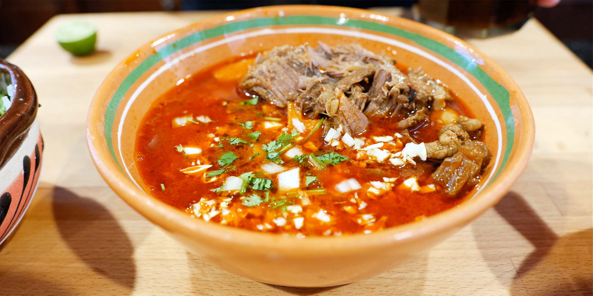

Birria!!

This is the best dish to cure a hangover, really tasty and also it can be eaten with a really good salsa. You can
eat as a soup just with the spoon or making tacos.
Ingredients
For the Meat
- 1 Lb Bone-In Lamb Ribs
- 1 Lb Beef shank
- 1 Lb Beef loin
- 1 1/2 Tbsp Salt
- 1 Tbsp Pepper
- 1 Tsp Ground Cumin
For the Sauce/Broth
- 4 Dried Ancho Chiles
- 4 Dried Guajillo Chiles
- 1 Chipotle Pepper
- 8 Peppercorns
- 2 clove
- 1 Tsp dried thyme
- 1 Tsp Marjoram
- 1 Tsp Dried Oregan
- 2 Bay Leaves
- 1/2 Tsp Ground Cumin
- 1/2 Tsp Ground Ginger
- 1/2 Cinnamon Stick
- 8 Cloves Garlic
- 1/2 Large Onion
- 1 1/2 Tbsp Salt
- 4 Red Tomatoes
- 1/4 cup Apple cider vinegar
- 2 cups Water
Steps
- Season the meat with salt, pepper, and cumin
- Cut open the dried chiles with scissors and remove the seeds
- Fry the dried chiles with a small amount of oil in a frying pan for 2-3 minutes, moving constantly
so they don't burn. Set aside
- Add the chiles from the previous step to a small pot with boiling water for about 10 minutes, or until softened.
- In the same frying pan where you fried the chiles, add 1 tablespoon of oil and cook the onions and tomatoes
until they are browned. Add the garlic, peppercorns, bay leaves, cinnamon stick, and all of the remaining
spices except for the ground cumin and ginger. Continue cooking for about 5 minutes, moving it around often.
- Add the chiles (including the water), the ingredients from the previous step, and the ginger, cumin, apple cider
vinegar and water to a blender and blend until smooth. It will still be pretty thick, but that is fine.
Strain and set aside the resulting sauce for the next step.
- Pour the sauce over the meat in a large bowl and cover. If using the oven or stovetop methods, you will want
to marinate for at least 2 hours or overnight. If using the electric pressure cooker option, you can marinate it,
but it isn't necessary.
- Add the meat with the marinade to a large stockpot and cook over medium heat, covered, for about three hours,
or until the meat falls off the bones and is easy to shred